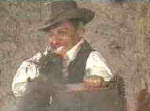

|
Wild Bunch, The(SE) A, B+ |
|
Warner/1969/145m/WS 2.35 |
Film rhythms can invite viewers into another world. The Wild Bunch is director Sam Peckinpah’s
master class in the perfection of film rhythm. Peckinpah must have set new records for the number
of cuts in The Wild Bunch, but it is a composition worthy of a genius. The camera lingers in
close-up or long shot with perfect timing. Whether catching the glint of steel in the eyes of
Pike Bishop or recording the blown up bridge from multiple angles, Peckinpah’s edits
are executed to precise effect. The Wild Bunch is Peckinpah’s mesmerizing masterpiece. It’s
seductive force never fails to blow me away .
The Wild Bunch is, of course, Sam Peckinpah’s paean to the
changing world. This last ride for Peckinpah’s surly brood  represents a
simpler time, a time of honor among thieves that is quick disappearing with the new West. Death is
dealt out on wholesale terms and men like Bishop are a thing of the past. Pike Bishop leads
his bunch to a last big job, but the bank robbery is a set-up and bounty hunters, led by former
partner Deke Thornton lie in ambush. The bunch flees to Mexico through a storm of carnage only to
wind up in an even wilder conflagration with the soldiers of despicable general Mapache.
The actors don’t get the credit they deserve for The Wild
Bunch. William Holden is brilliant in the role of
Pike Bishop. His former matinee looks beginning to dissolve into dissipation, Holden captures
the essence of Bishop. The laconic Robert Ryan captures a self-loathing propped up by a
distant respect for some truth. Ernest Borgnine as Dutch gives Holden great support and Ben
Johnson and Warren Oates are down and dirty as the Gorch brothers. Edmond O’Brien, Strother
Martin and L.Q. Jones round out the cast of actors having a field day south of the border.
Peckinpah’s command of this film is never in question. It’s
his great cinema moment, but his collaborators give him everything he asks of them and more. Walon
Green’s screenplay creates a set of memorable characters with perfect lines like “I wouldn’t
have it any other way.” Lucien Ballard’s cinematography is magnificent. Jerry
Fielding’s score propels the action decisively. Lou Lombardo’s editing is an awesome
achievement.
With this latest edition of The Wild Bunch, this time
on DVD, “Bunch” aficionados get the bonus of a documentary on the making of the film. While the
35 minute film is very entertaining, it left me wanting more. It was a tasting glass of a
spectacular wine. The inspirational way the amazing walk to confront Mapache was put
together is a revelation
While The Wild Bunch DVD is a welcome catalogue
addition, it burns my backside that this important 2.35:1 film was not delivered anamorphic.
Warner chose to windowbox The Wild Bunch to compensate for overscan on most
televisions. The widescreen presentation is sharp, but not devoid of grain. Colors are
accurate and controlled. Visually, this is as good as it’s going to get for many
years. Dialogue is crisp and Jerry Fielding’s dynamic score comes to glorious life in the
Warner DVD of The Wild Bunch.
|
|
|

Selections from the feature archive include articles on Akira
Kurosawa, Frank Darabont,
Blonde
Bimbos, Hollywood Street Gangs,
or Vietnam:
The Hollywood Pariah, and many more....
Vietnam:
The Hollywood Pariah

During World War II, Hollywood pumped out war movies one after the other. Vietnam was was another
story. As far as Hollywood was concerned it was a pariah.


The National Film Preservation Foundation (NFPF) is the nonprofit organization created by the U.S. Congress to save
America's film heritage.
Imaging Science Foundation
The Imaging Science Foundation promotes proper standards in home theater viewing. ISF trained
technicians offer monitor calibration services to consumers. The difference in a properly
calibrated monitor can be astounding. Click on the image to find an ISF member near you.

The
Movie Poster Archive includes extensive poster images from the films of stars like Susan Hayward,
Kirk Douglas, Katharine Hepburn and many more. Our featured star is Lana Turner.
|